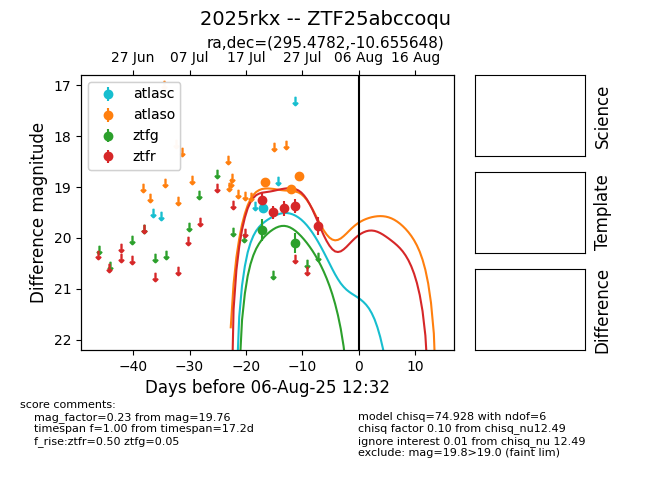

Target 2025rkx at 2025-08-06 17:07, see:
FINK: fink-portal.org/2025rkx
Lasair: lasair-ztf.lsst.ac.uk/objects/2025rkx
ALeRCE: alerce.online/object/2025rkx
TNS: wis-tns.org/object/2025rkx
YSE: ziggy.ucolick.org/yse/transient_detail/2025rkx
alt names
ZTF25abccoqu (ztf,fink)
2025rkx (tns,yse)
coordinates:
equatorial (ra, dec) = (295.4782,-10.65565)
galactic (l, b) = (28.9554,-15.98524)
photometry
last atlasc=19.42, atlaso=18.79, ztfg=20.10, ztfr=19.76
1 atlasc, 3 atlaso, 2 ztfg, 5 ztfr detections
